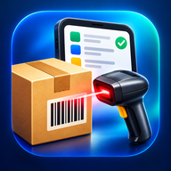

Términos del servicio de Cuadre
1. Aceptación
Al usar Cuadre aceptas estos términos. Si no estás de acuerdo, no la uses.
2. Qué es Cuadre
Cuadre es una aplicación web instalable (PWA) que funciona principalmente en tu dispositivo. Permite registrar productos, entradas, ventas y salidas, generar cotizaciones y reportes, y, de forma opcional, sincronizar tus datos con tu propio Google Drive.
3. Planes
- Gratis: uso sin costo con las funciones y límites que se muestran en la aplicación (por ejemplo, un máximo de productos).
- Pro: suscripción mensual o anual que desbloquea las funciones y límites indicados en la aplicación. El precio y la forma de pago se muestran antes de pagar. Dentro de la app de Google Play, el cobro y la renovación automática los hace Google Play: la suscripción sigue hasta que la canceles (Play Store → Pagos y suscripciones) y conservas Pro hasta el fin del período que ya pagaste. Los reembolsos se rigen por las reglas de Google Play. Fuera de Google Play, Pro puede activarse con un código que entrega el vendedor.
- Computadora: la versión en pantalla grande es un plan aparte, según se indica en la aplicación.
- Una prueba gratuita de Pro, si se ofrece, dura el tiempo que indique la aplicación.
4. Tu cuenta y tus datos
- Tú eres el dueño de la información que registras. Cuadre no reclama ningún derecho sobre ella.
- El inicio de sesión con Google es opcional. Si lo usas, tus datos se guardan en la carpeta privada de la aplicación en tu Google Drive, como explica la política de privacidad.
- Eres responsable de mantener seguro tu dispositivo y tu cuenta de Google.
5. Copias de seguridad
Cuadre hace copias automáticas y te permite exportar un respaldo, pero ningún sistema es infalible: si borras los datos del navegador, pierdes el dispositivo o eliminas la carpeta en tu Drive, la información puede perderse. Te recomendamos exportar un respaldo con regularidad.
6. Uso aceptable
No uses Cuadre para actividades ilegales, para intentar vulnerar la aplicación o a otras personas, ni para copiar, revender o redistribuir la aplicación sin autorización.
7. Exactitud de los resultados
Los cálculos de existencias, márgenes, impuestos y cotizaciones dependen de los datos y porcentajes que tú configuras. Revisa siempre los resultados antes de usarlos para decisiones comerciales, facturas o declaraciones. Cuadre no es un sistema de facturación electrónica ni sustituye asesoría contable o legal.
8. Sin garantías
La aplicación se ofrece «tal cual», sin garantías de funcionamiento ininterrumpido o libre de errores. Hacemos lo posible por mantenerla estable y por corregir fallos.
9. Limitación de responsabilidad
En la medida permitida por la ley, no somos responsables por pérdidas de datos, de ventas, de ganancias u otros daños indirectos derivados del uso o de la imposibilidad de usar Cuadre. Nuestra responsabilidad total no excederá lo que hayas pagado por el plan Pro.
10. Cambios
Podemos actualizar estos términos. La versión vigente estará siempre en esta dirección, con su fecha. Si sigues usando Cuadre después de un cambio, aceptas la versión nueva.